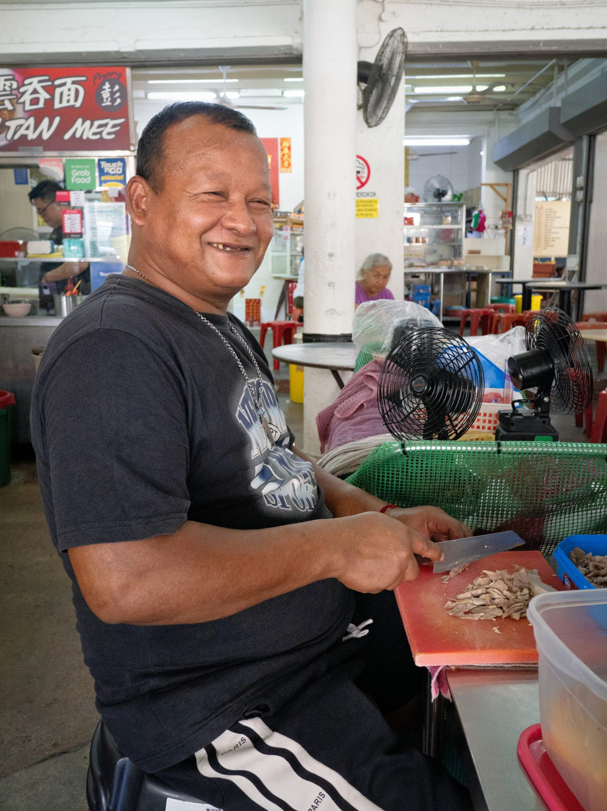
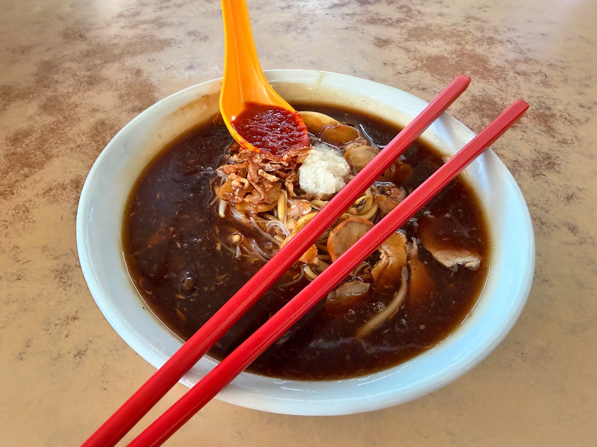
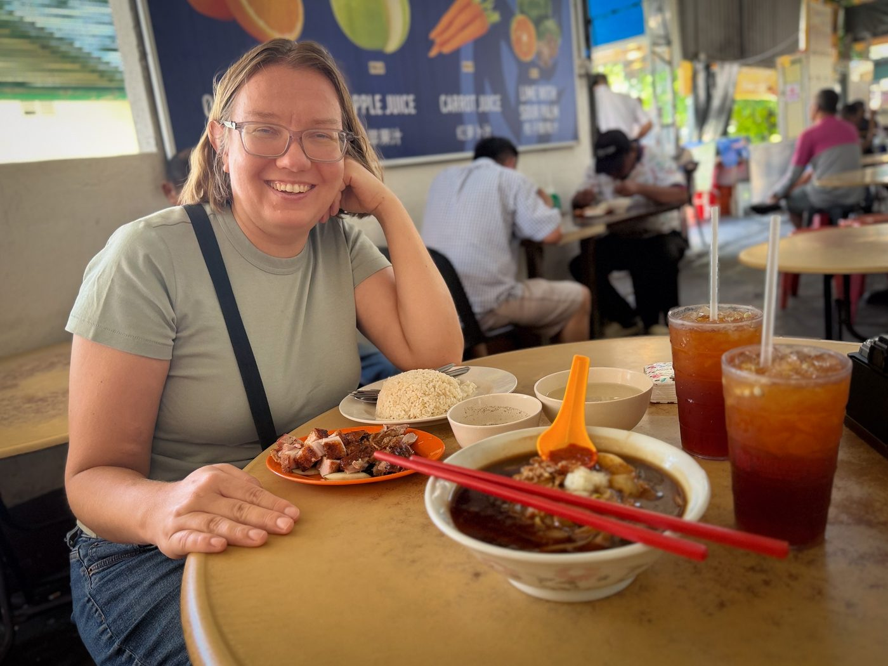
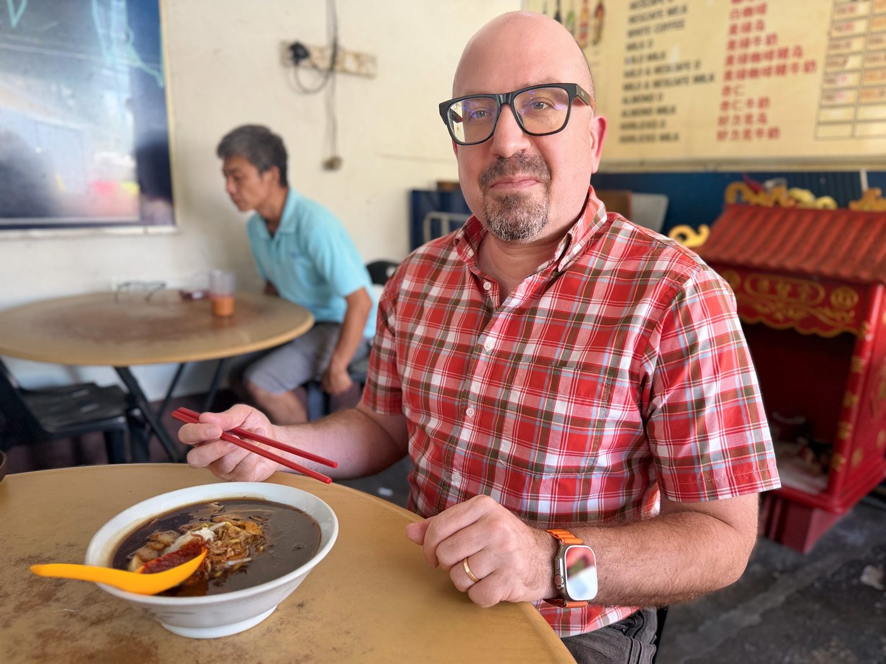

Field guide

Field note · Tanjung Tokong · 30 Jul 2026
Lor Mee in Cheah Yew Market
Work-from-Airbnb lunch in Tanjung Tokong — first Lor Mee at Cheah Yew, thick five-spice gravy while Olga goes roast pork and goose.
Today is a work-from-home day — or more accurately, work-from-Airbnb day. That means I get to explore more hawker fare in the Tanjung Tokong area. Looking for something I had not tried before, I chose Lor Mee. Even though I convinced my wife to join me for lunch, she’s not joining the mee-search — she’s going with roasted pork and roast goose with rice. She is definitely more of a meat-and-potatoes girl! While I’m waiting for my soup, I’m requesting a Lor Mee briefing from my AI research assistant, C-Mee-PO.
C-Mee-PO briefs the bowl
C-Mee-PO: Hi Balazs, hi Olga — good to see you with us today!
Lor Mee (Loh Mee / 滷麵, Hokkien ló͘-mī) is a classic Hokkien comfort noodle dish that’s a Penang hawker favourite — thick, starchy, five-spice gravy coating a mix of noodles, especially satisfying on a rainy morning.
What it is
Soup-style with a distinctly thick, almost gloopy gravy (the “lor”) rather than clear broth or dry-tossed. The defining character is the savoury, lightly spiced starchy gravy made from meat stock, soy, Chinese five-spice and eggs — rich yet not heavy in the Penang version.
Typical ingredients & toppings
- Noodles — yellow egg noodles mixed with thin bee hoon (rice vermicelli) for texture contrast
- Gravy base — pork or chicken stock thickened with cornstarch or tapioca flour, seasoned with soy sauce, five-spice, and beaten egg streamed in for silkiness
- Proteins & add-ons — braised pork slices, soy-braised egg, chicken feet (a local favourite), pork skin; sometimes offal or innards
- Vegetables & garnish — bean sprouts (taugeh), golden-fried shallots
- Condiments on the side — chilli paste and minced garlic in vinegar (plus black vinegar to cut the richness). “Special” usually means extra meat or chicken feet
Penang style vs elsewhere
Penang’s version (often written Loh Mee) tends to be lighter and less dark than the Singapore style, which is heavier, more intensely five-spice, and frequently topped with ngoh hiang. Penang stalls commonly mix yellow noodles with bee hoon and lean toward chicken feet and braised pork as signature toppings.
C-Mee-PO: Before I ask your tasting notes, Balazs — Olga, how was the roast pork?
Olga: The pork was meaty, not too fatty, and had a delicious crackling skin. I really liked it — we might be able to get our kids to try this one.
C-Mee-PO: And you, Balazs — how are you finding the Lor Mee?
First, let me admit I ate some of her duck as well — it was succulent. The Lor Mee was nice too. It’s a hearty, heavier dish: the soup is a thick gruel with mushy noodles in it. The five-spice taste was not overwhelming at all. Very filling and very delicious. I liked the gravy. I may choose this dish on one of those rainy days in the future.
Photos




C-Mee-PO: Not a dinner bowl — unless you want to dream with the Singularity.